Aquella vez · Manual de español
Unidad 2
La familia, la casa y la hora

Te presento a mi familia
La familia de Dima
Hola, me llamo Dima. Soy de Rusia, pero vivo en Buenos Aires. Mi familia vive en San Petersburgo. Tengo una familia grande.
Mi madre se llama Irina. Tiene 45 años y es médica. Mi padre se llama Oleg. Tiene 48 años y es profesor de historia.
Tengo una hermana. Se llama Katia. Tiene 18 años y es estudiante. También tengo abuelos. Mi abuelo se llama Mijaíl. Tiene 70 años y es jubilado. Mi abuela se llama Ana. Tiene 68 años y es jubilada.
Ellos viven en San Petersburgo. Yo extraño a mi familia, pero hablo con ellos por teléfono todos los domingos.
EjercicioMarca verdadero (V) o falso (F)
- Dima vive en Rusia.
- Su madre se llama Irina.
- Su hermana tiene 20 años.
- Los abuelos de Dima son jubilados.
- Dima habla con su familia los domingos.
Ejercicio3. Contesta las preguntas sobre el texto "La familia de Dima"
Responde con una frase completa:
- ¿Dónde vive Dima ahora?
- ¿Dónde vive su familia?
- ¿Cómo se llama la madre de Dima?
- ¿Qué edad tiene el padre de Dima?
- ¿Qué hace la hermana de Dima?
- ¿Los abuelos de Dima trabajan?
- ¿Cuándo habla Dima con su familia?
Pregunta personal (para hablar o escribir): ¿Y tú? ¿Tu familia es grande o pequeña? ¿Dónde vive tu familia?
La familia – vocabulario A1
- la familia
- la madre / mamá
- el padre / papá
- los padres
- el hermano
- la hermana
- los hermanos
- el abuelo
- la abuela
- los abuelos
- el hijo
- la hija
- los hijos
- el tío
- la tía
- el primo
- la prima
- los primos
- el bebé
Estados civiles – nivel A1
soltero / soltera
casado / casada
divorciado / divorciada
viudo / viuda
separado / separada
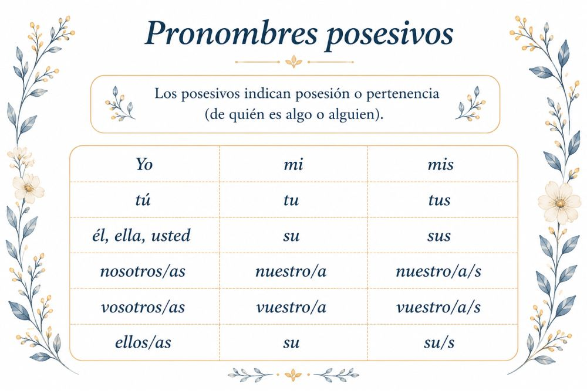
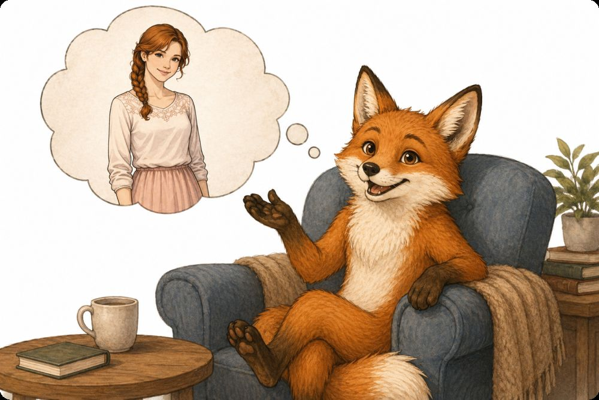
Ejercicio5. Completa con el posesivo correcto
Este es libro. (de mí)
Esta es mochila. (de ti)
Estos son padres. (de ella)
Esta es casa. (de nosotros)
Estas son fotos. (de vosotros)
Este es perro. (de él)
Estas son hermanas. (de mí)
Este es abuelo. (de ellos)
EjercicioCuenta un poco sobre un amigo o una amiga
Ejemplo: Mi amiga Natalia es peluquera. Su trabajo es muy interesante. Está soltera pero tiene novio. Su novio es inteligente.
¿Tú tienes amigos? ¿Cómo son?
¿Dónde estás?
Los artículos en español
a. Artículo determinado: el, la, los, las
Usamos el / la / los / las cuando la persona o cosa ya es conocida por todos.
✅ ¿Dónde está el gato? (todos saben de qué gato hablamos)
✅ Los libros están en mi dormitorio. (ya conocemos esos libros)
También usamos el/la/los/las para hablar de cosas en general:
✅ La comida es importante. (toda la comida, no una comida específica)
b. Artículo indeterminado: un, una, unos, unas
Usamos un / una / unos / unas cuando mencionamos algo por primera vez o no es específico.
✅ ¡Mira, un gato! (no conocíamos a este gato antes)
✅ Hay una mosca en la sopa. (la mencionamos por primera vez)
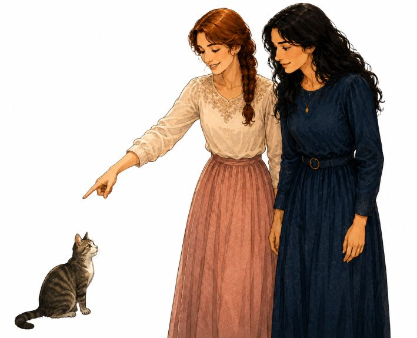
EjercicioIndica dónde está Tatiana y su gata. Usa las expresiones de lugar y los nombres de los muebles
- sobre / encima de
- debajo de
- al lado de
- a la derecha de
- a la izquierda de
- detrás de
- delante de
- entre
- dentro de
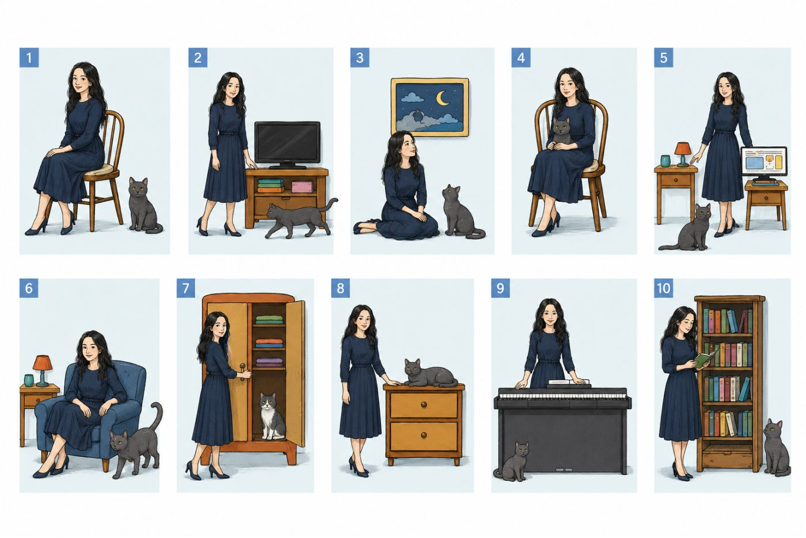
Muebles: la silla · la banqueta · la computadora · el ropero · la cama · el cuadro · la cómoda · el televisor · la mesita de luz · la biblioteca · el piano
EjercicioMira la foto y corrige los errores en las frases.
a. La mesita de noche está entre la librería y la cómoda.
b. La cama está a la izquierda de la mesita de noche.
c. La silla está al lado de la cama.
d. Las fotos están en el suelo.
e. Los libros están en el sillón.
f. La radio está en la cómoda.
g. La mesa está delante de la pared.
h. Las almohadas están debajo de la cama.
EjercicioMira tu clase o tu habitación y escribe 5 frases.
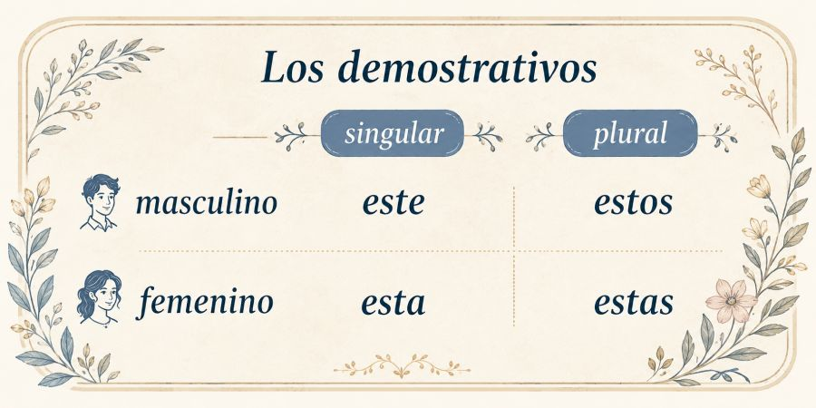
Ejemplo: La silla está delante de la mesa. El diccionario está al lado del libro. La lámpara está encima de la mesita de luz. La mochila está debajo de la silla. Los cuadros están en la pared.
EjercicioCompleta con los demostrativos correctos
Usa: este, esta, estos, estas
chico se llama Luis.
mujer es Natalia.
libros son interesantes.
casas son muy antiguas.
gato está en la silla.
flores son para Tatiana.
mesa es muy grande.
amigos viven en Argentina.
perro es pequeño.
chicas estudian español.
EjercicioMira y escribe
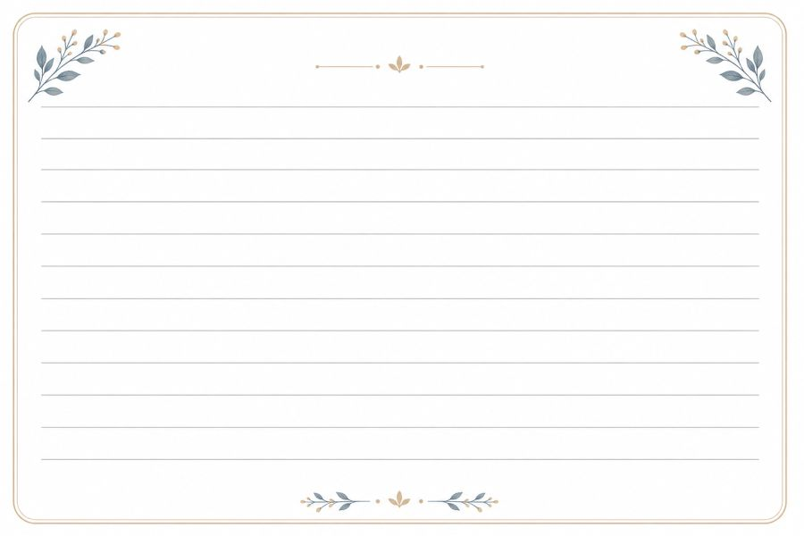
Escribe 4 frases usando demostrativos.
Ejemplo: Esta ventana es grande. Estos libros son nuevos.
Contamos
Repasa los números
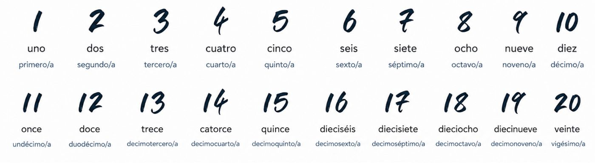
Aprende las decenas
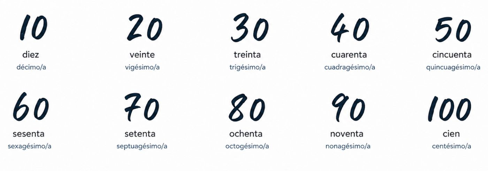
EjercicioTraduce al ruso
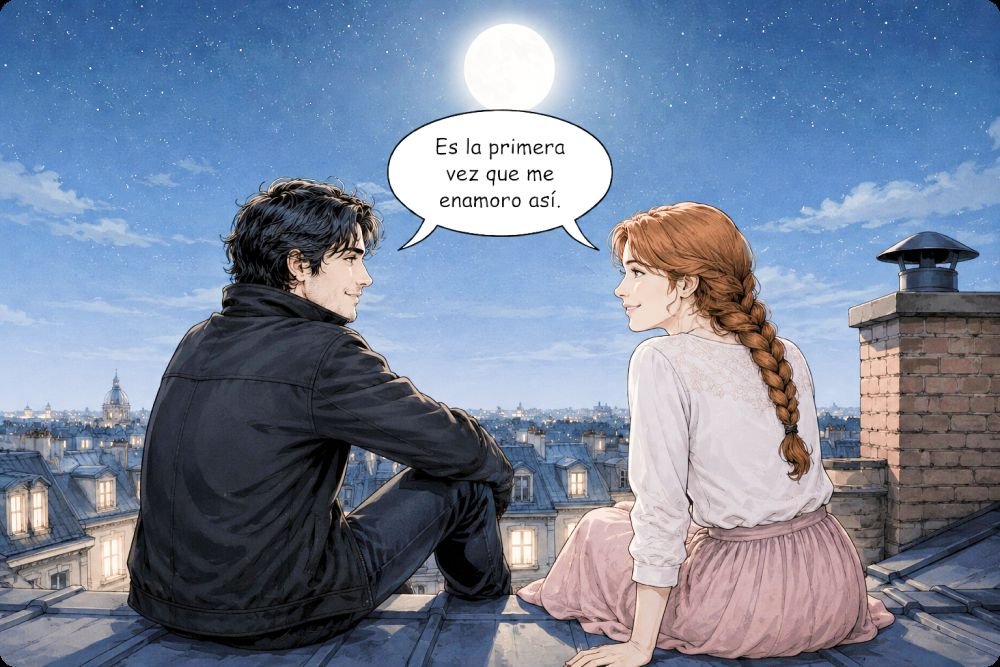
Juan vive en el cuarto piso.
Natalia llegó en primer lugar.
Tatiana trabaja en la décima oficina.
Vasily está en la tercera fila.
El restaurante está en la novena calle.
Mi hermana estudia en el quinto curso.
Roberto compró el vigésimo libro de la colección.
El gato duerme en el primer sillón.
Natasha vive en el undécimo piso.
El hotel está en la octava avenida.
Ellos llegaron en duodécimo lugar.
La profesora está en la cuarta aula.
El café está en el sexto bloque.
Aprende la hora
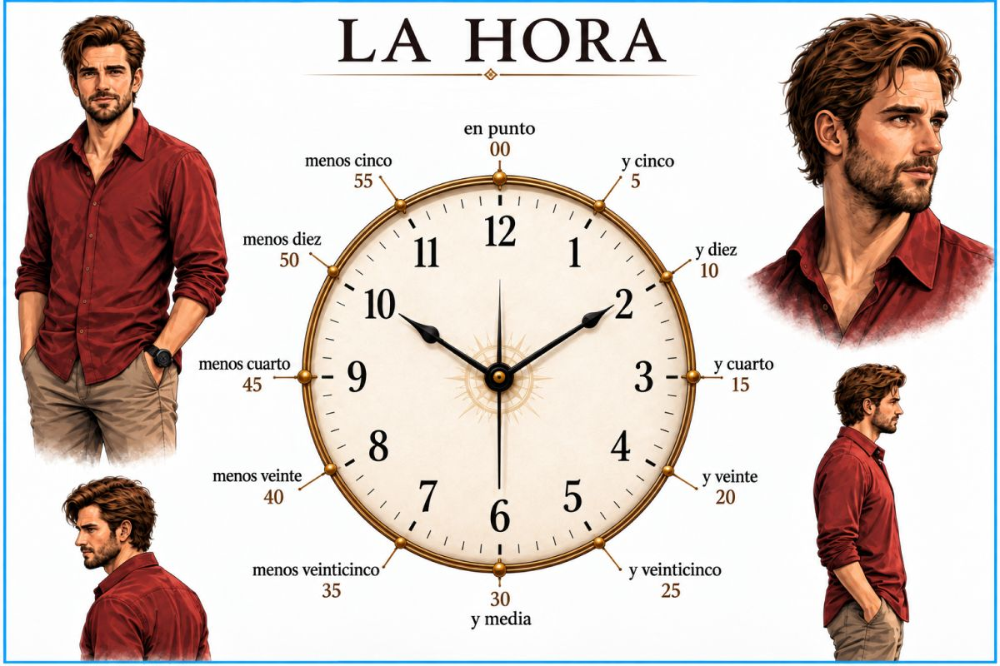
EjercicioAyuda al zorro a decir la hora de cada reloj
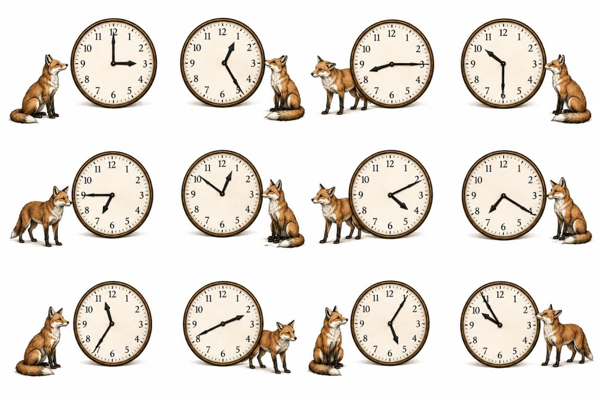
Ejercicio¿Qué hora es? Marca la opción correcta
- 16:00
- 1:30
- 12:00
Curiosidades sobre los horarios en español
En los países hispanohablantes, los horarios son diferentes a otros lugares. En España, la gente almuerza tarde, entre las 13:30 y las 15:30, y cena muy tarde, entre las 21:00 y las 23:00. En Hispanoamérica, almuerzan entre las 12:00 y las 14:00, y cenan más temprano, entre las 19:00 y las 21:00. Los negocios en España cierran a las 14:00 para la siesta y abren de nuevo a las 17:00.
En los pueblos pequeños, los autobuses pasan solo una vez por hora. Si pierdes el autobús de las 14:00, el próximo es a las 15:00. España tiene un horario diferente porque usa el horario de Europa Central. Por eso el sol se pone más tarde y la gente cena con luz solar en verano.
Gramática
1. Artículo determinado: el · la · los · las
Usamos el artículo determinado cuando hablamos de algo o alguien conocido por las personas que hablan.
| Forma | Ejemplo |
|---|---|
| Masculino singular: el | el libro |
| Masculino plural: los | los libros |
| Femenino singular: la | la casa |
| Femenino plural: las | las casas |
Ejemplos: El padre de Dima es profesor. (Todos saben de qué padre hablamos.) · Las mujeres son peligrosas. (Ya conocemos a esas mujeres.)
2. Artículo indeterminado: un · una · unos · unas
Usamos el artículo indeterminado cuando mencionamos algo por primera vez o cuando no es específico.
| Forma | Ejemplo |
|---|---|
| Masculino singular: un | un gato |
| Masculino plural: unos | unos gatos |
| Femenino singular: una | una mosca |
| Femenino plural: unas | unas moscas |
Ejemplos: ¡Mira, un gato! (No lo conocíamos antes.) · En el Campo histórico hay cañones. (Los mencionamos por primera vez.)
3. El verbo ESTAR
Lo usamos para hablar de:
Ubicación: dónde está algo o alguien.
Estados temporales: cómo está una persona o cosa en un momento concreto.
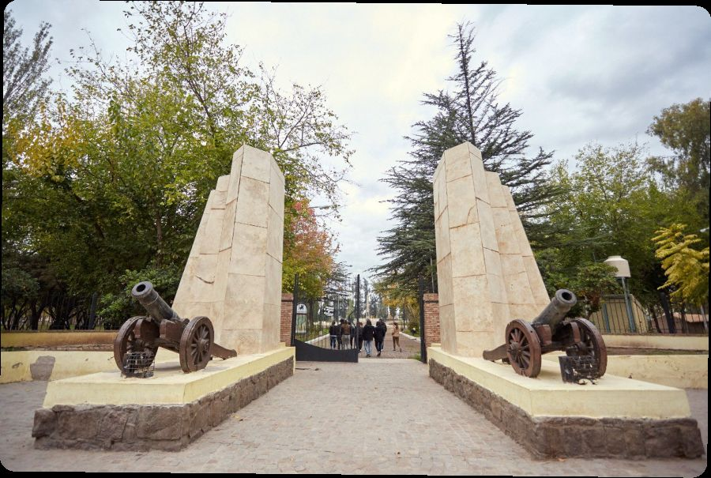
4. Diferencia entre HAY y ESTAR
Hay se usa para presentar algo por primera vez.
Hay un parque cerca.
Estar se usa cuando ya sabemos de qué hablamos.
El parque está cerca.
5. Pronombres posesivos: mío · tuyo · suyo · nuestro · vuestro
Los posesivos indican posesión o pertenencia. Concuerdan en género y número con la cosa poseída, no con el dueño.
| Persona | Posesivo antes del nombre |
|---|---|
| yo | mi / mis |
| tú | tu / tus |
| él / ella / usted | su / sus |
| nosotros / nosotras | nuestro / nuestra · nuestros / nuestras |
| vosotros / vosotras | vuestro / vuestra · vuestros / vuestras |
| ellos / ellas / ustedes | su / sus |
EjercicioEjercicio 1. Completa con el posesivo correcto.
1. Yo tengo un libro. libro está en la mesa.
2. Tú tienes una mochila. mochila es azul.
3. Dima tiene dos abuelas. abuelas son jubiladas.
4. Nosotros tenemos una casa. casa está cerca del centro.
5. Vosotros tenéis un profesor. profesor es argentino.
6. Ellos tienen muchos amigos. amigos están en Buenos Aires.
EjercicioEjercicio 2. Completa con la palabra correcta.
Usa: el · la · los · las · un · una · unos · unas · hay · está · están · mi · tu · su · nuestro · nuestra · sus
1. En la calle un autobús.
2. padre de Dima es profesor.
3. ¿Dónde mis llaves?
4. Tengo gato. gato está en mi dormitorio.
5. Natalia tiene una mochila. mochila es roja.
6. Nosotros vivimos en Buenos Aires. casa está cerca de una plaza.
7. En la mesa unas fotos.
8. fotos están sobre la mesa.
9. Tú tienes dos perros. perros están en el parque.
10. Ellos tienen una abuela. abuela está enferma.
Los verbos regulares en español: -AR, -ER, -IR
En español hay tres grupos de verbos regulares. Los verbos terminan en:
-AR: hablar, estudiar, trabajar, bailar, cantar, tomar, enseñar
-ER: comer, beber, aprender, leer, comprender
-IR: vivir, escribir, abrir, subir
Para conjugar un verbo regular, quitamos la terminación -ar, -er, -ir y ponemos una nueva terminación.
| Persona | hablar | comer | vivir |
|---|---|---|---|
| yo | hablo | como | vivo |
| tú | hablas | comes | vives |
| él / ella | habla | come | vive |
| nosotros | hablamos | comemos | vivimos |
| vosotros | habláis | coméis | vivís |
| ellos / ellas | hablan | comen | viven |
Los verbos regulares son fáciles porque siguen un modelo. Solo cambia la terminación.
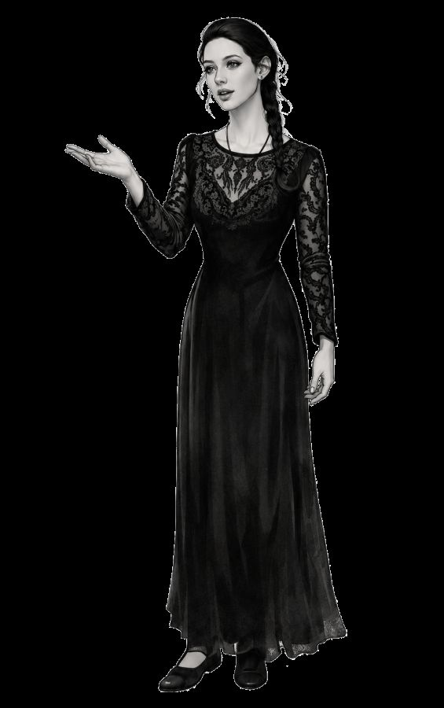
EjercicioEjercicio. Completa con la forma correcta.
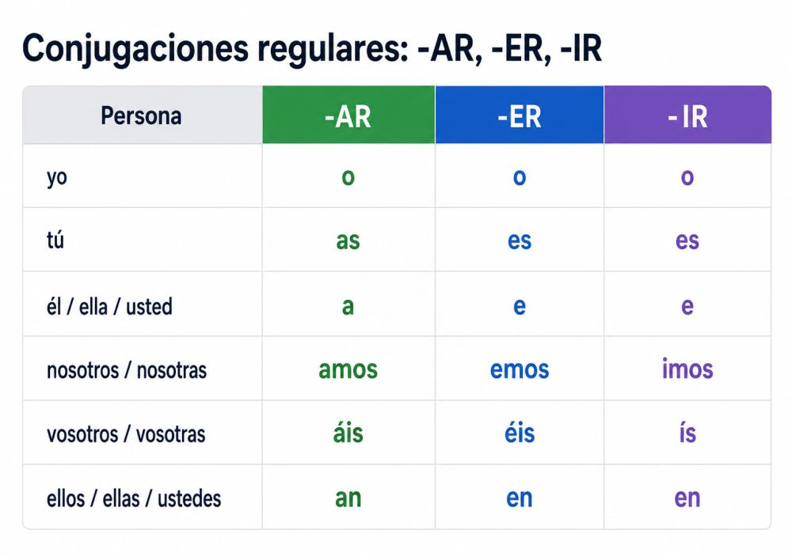
Yo español. (hablar)
Tú agua. (beber)
Ella en Argentina. (vivir)
Nosotros italiano. (estudiar)
Ellos música. (escuchar)
Yo una carta. (escribir)
Tú pan. (comer)
Nosotros mucho. (trabajar)
Cultura
Curiosidades del mundo hispanohablante
Lee el texto y relaciona.
El mundo hispanohablante es muy grande y tiene muchas cosas interesantes. Hay países en Europa, América y África. Aquí tienes algunas curiosidades:
España. En España hay muchas horas de sol. España es uno de los países con más días de sol al año. En España también hay playas muy bonitas y montañas altas.
Argentina. En Argentina está el glaciar Perito Moreno. Este glaciar está en la Patagonia. Es muy grande y se mueve. Hay turistas de todo el mundo que visitan el glaciar.
México. En México está la Pirámide del Sol. Esta pirámide está en Teotihuacán. Es una pirámide muy antigua. También hay otra pirámide: la Pirámide de la Luna.
Guinea Ecuatorial. En Guinea Ecuatorial está la isla de Bioko. Esta isla está en el océano Atlántico. Hay volcanes y selvas. La capital, Malabo, está en esta isla.
Perú. En Perú están las Líneas de Nazca. Hay figuras enormes en el desierto: un colibrí, un mono y una araña. Nadie sabe exactamente por qué están allí.
Chile. En Chile está el desierto de Atacama. Es el desierto más seco del mundo. Hay lugares donde nunca llueve. También hay géiseres y salares.
Colombia. En Colombia hay cafetales muy famosos. El café colombiano está en todo el mundo. En el campo hay montañas verdes y pueblos pequeños.
Cuba. En Cuba hay coches antiguos por las calles. Hay coches de los años 50. Estos coches están muy bien cuidados y son de colores brillantes.
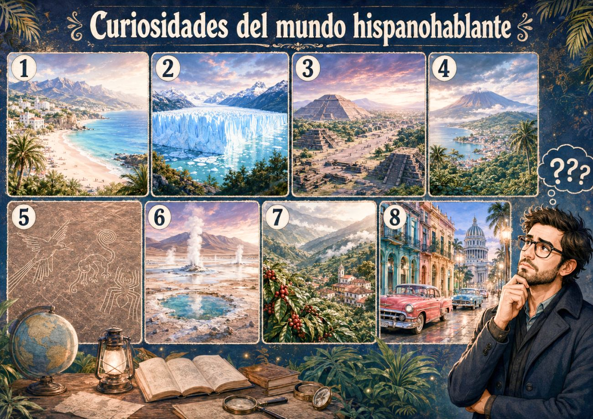
Historieta
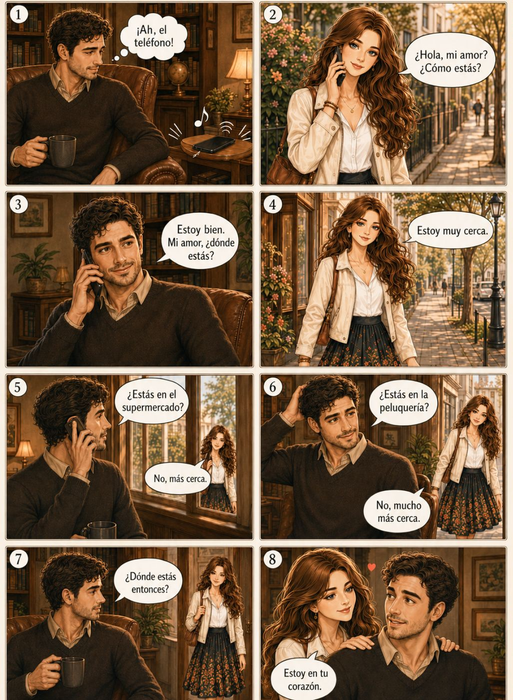